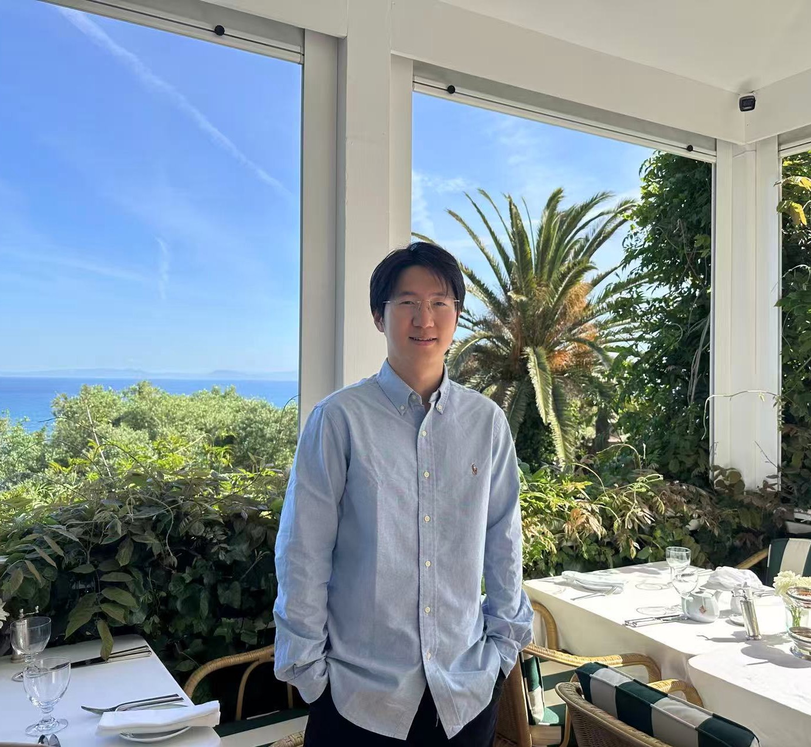

I am a first-year PhD student in Computer Science at the University of Chicago, where I previously received my Bachelor's degree in Mathematics and Computer Science. I am advised by Prof. Yuxin Chen.
My research interests lie broadly in Continual Learning, Active Learning, and Reinforcement Learning, with applications to Scientific Domains and Large Language Models. I am interested in developing learning systems that continuously acquire, transfer, and refine knowledge through interaction and experience, with the long-term goal of building more capable, adaptive, and autonomous AI systems.
Feel free to reach out if you are interested in discussing related research or potential collaborations!